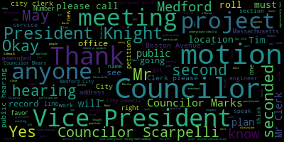
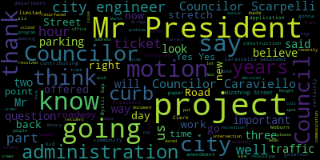
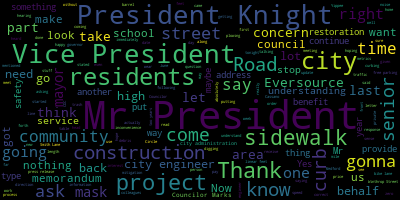
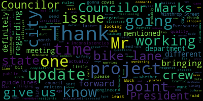

[Caraviello]: Good evening. 21st regular meeting of the Medford City Council, May 25th, 2021. Mr. Clerk, please call the roll. Pursuant to Governor Baker's March 12, 2020 order, suspending certain provisions of the Open Meeting Law, Chapter 38, Section 18, and the Governor's March 15, 2020 order, imposing strict limitation on the number of people that may gather in one place, this meeting of the Medford City Council will be conducted via remote participation to the greatest extent possible. Specific information in the general guidelines for remote participation by members of the public and private parties with the right or requirement to attend this meeting can be found at the City of Medford website at www.medford.org. For this meeting, members of the public who wish to listen, watch the meeting may do so by accessing the meeting link contained herein. No in-person attendance of members will be permitted, but every effort will be made to ensure that the public can adequately access the proceedings in real time via technological means. In the event that we're able to do so despite our best efforts, we will post on the City of Medford or the Medford Community Media website an audio or video recording transcript or the comprehensive record of the proceedings as soon as possible after the meeting. Okay. 21344, City of Medford, a public hearing, public hearing via via Zoom remote video conference on a Tuesday evening, March, May 25th, 2027, on a petition from Eric Shakes of Chicken and Shakes Automotive, 78 Swan Street, Medford, for a class two used. used auto sales special permit in accordance with chapter 94 zoning ordinance of the city of Medford, section 94-148, table on the list of regulation of automobile use, this is 27A, for permission to operate its class two secondhand motor vehicle sales at 78 Swan Street, Medford, an industrial zoning district. A Zoom link for this meeting will be posted on no later than May 21st, 2021. Petition and plans may be seen in the Office of City Clerk, Reference to the Ombudsman, Mass. Call 781-393-2425 for any accommodations or rates. Okay, this is a public hearing. Mr. Shakes, are you on the call? Yes, sir. Okay, well, this is a public meeting, a hearing. Is there anyone in favor of this petition? Mr. Shakes, are you in favor of this? Yes, yes, I am in favor. Thank you, sir. Is anyone else in favor? Hearing and seeing none, we close that part of the meeting. Is there anyone in opposition to this public hearing? Hearing and seeing none, we close that part of the meeting. Mr. Shakes, name and address of the record, if you can give us a little brief explanation on what you're doing with this license. Yeah, we plan to buy and sell used cars. pretty much anything that's involved with that. Licensing is Councilor Scarpelli, Councilor Scarpelli.
[Scarpelli]: Mr. Shakes, could you explain how many cars will be on the lot? How many cars will be on the lot? Yeah. Eight. Okay. Yeah, eight. Is this also a, A service station? No, we're not a service station. We have an automotive body shop. Okay, right. I do see all the paperwork's in order, Mr. President. Any questions for my fellow councilors?
[Caraviello]: Do any councilors have any questions for Mr. Shakes? Councilor Scarpelli, I don't see any hands up.
[Scarpelli]: Move approval, Mr. President.
[Caraviello]: And we're on the motion for approval by Councilor Scarpelli. Seconded by? Second. Seconded by Councilor Bears. Mr. Clerk, please call the roll.
[Hurtubise]: Councilor Bears. Yes. Councilor Falco.
[Unidentified]: Yes.
[Hurtubise]: Vice President Knight. Yes. Councilor Marks.
[Unidentified]: Yes.
[Hurtubise]: Councilor Morell.
[Unidentified]: Yes.
[Hurtubise]: Councilor Scarpelli.
[Caraviello]: President Keohokalole. Yes, 70 affirmative motion passes. Good luck on your new operation, sir. Thank you. Have a good evening. Sir, too. Legal notice 21370 petition for a grant of location, national grid, not the end of the Massachusetts. Location of underground electric conduits, Medford, Massachusetts city clerk's office. You were hereby notified by all of Medford city council that the Medford City Council will hold a public hearing via Zoom on Tuesday, March 25th, May 25th, a link to be posted no later than Friday, May 21st, on a petition of Massachusetts Electrical Company doing business as that's good for permission to construct a lone underground electric conduit, including the necessary sustaining and protecting fixtures under and across the public ways here named said underground electric car to be located substantially in accordance with the plan marked Boston Avenue Metro Mass and filed in the office of the city clerk. Wherefore, it prays that after due notice and hearing, as provided by law, it be granted the location permission to excavate the public highways and run and maintain underground electric conduits together with such sustained protective fixtures as it may find necessary for the transmission of electricity, said underground conduits to be located substantially enclosed with the planned files here with Mark Boston Avenue, Miffin Mass, and available for inspection. in the office of the City Clerk, Method City Hall, room 105, 85 George P. Hatcher Drive, Method Mass 02155. The following are the streets and highways referred to. Plan number 30278888, Boston Avenue. National grid to install, beginning at the point of approximately 200 feet northwest of the center line of the intersection of Boston Avenue and College Avenue, and continue approximately 65 feet in the northeast direction and install two to three inch secondary duct from the existing pole number 3310-5, 65 feet north east towards 468 Boston Avenue and MBTI. Location approximately as shown on a plan filed in the office of the city clerk, approved by the chief engineer with the following conditions. The engineering division recommends that this grant of location be approved with the following conditions. One, the granting location is limited to 65 feet of duct bank as described in the GOL document as follows. National grid to install beginning at a point approximately 200 feet northwest of the central line of the intersection of Boston Avenue and College Ave and continuing approximately 65 feet in the northeast direction. Install two or three feet of secondary duct from existing pole 3310-5, 65 feet northeast toward 468 Boston Ave, MBTA Yard. Before starting work, the contractor. shall notify DIGSAFE and shall obtain all applicable permits from the engineering division. The project must obtain a street opening permit pursuant to section 74-141 of the city ordinances prior to commencing work. Three, no other utility structures, conduits, duct banks, pipes, or any other apparatuses are adversely impacted. National Grid should ensure that all sewer, water, and drain lines are marked prior to any excavation. Number four, The plan included with the petition does not include existing utilities. The street opening permit application must include an engineered plan showing existing utilities. The street opening permit application must also include a copy of the MWRA 8M permit. Number five. Roadway service restoration must be coordinated with the Green Line Extension project. At a minimum, final service restoration normally offsets, offset limits your line and abut final service restoration resulting from Green Line Extension utility work. If possible, final restoration should be coordinated to minimize seams. The southerly offset must be also coordinated with the Greenline Extension Project and be a minimum of 10 feet. The final restoration plan must be approved by the engineering division. Number six, sidewalk surface restoration must be coordinated with the Greenline Extension Project. At a minimum, final sidewalk restoration on the eastern side of Boston Avenue should include new cement concrete and vertical granite curbing. The existing concrete barrier should not be replaced. The final restoration plan must be approved by the engineering division. Number seven, pavement markings must be restored. Temporary markings must be painted during the interim period between trench patch and final restoration. Number eight, the project site must be swept daily and shall be kept free of debris for the duration of the installation. Approved by the superintendent of wires. Okay, plans can be viewed in the city clerk's office, 781-393-2425. Do we have somebody from National Grant on the call here?
[SPEAKER_19]: Yes, good evening. My name is Socrates. My address is 170 Medford Street in Holden.
[Caraviello]: Okay, and this is a hearing for a grant to location. Yes. I'm sorry, can we get your last name again? Sure, Socrates Perez. Okay, so Ms. Socrates, with this public hearing, are you in favor of this project? Yes, I am. Is there anyone else in favor of this project? Hearing and seeing none, we close this portion of the hearing. Is there anyone here in opposition to this project? Hearing and seeing none, we close this section of the hearing. So, Mr. Socrates, if you can give us a brief description of what's going on in this project.
[SPEAKER_20]: Sure. This project is for the MBTA. We are petitioning to install two three-inch conduit from an existing pole 3310-5 and running towards 468 approximately 65 feet. And then after that will be MBTA's property.
[Caraviello]: Okay, do anyone have any questions for National Grid? Councilor Rao.
[Morell]: Thank you, Mr. President. So is there anticipated traffic impact or pedestrian impact while this project is going on?
[SPEAKER_20]: Say that again, sorry.
[Morell]: Is there anticipated either traffic or pedestrian impact while this project is going on? Will people have to be diverted at all while this work is happening?
[SPEAKER_20]: That would be, yeah, the contractor will be doing all that.
[Morell]: I'm sorry?
[SPEAKER_20]: The contractor will be handling all that.
[Morell]: Okay. I'm not sure. I'm not sure. But, uh, timing wise, since the other grant of location we have, um, is kind of diagonally across the street is are these being tied together? You know, as far as the intention of when to do the work, I know there's still, um. Some requirements from our city engineer, but I'm curious the desired timing as far as the work of the two projects.
[SPEAKER_20]: Uh I'm not
[Knight]: Vice President Knight. Mr. President, thank you very much. I certainly don't have any problem with this petition that's before us this evening. If you drive through that area and that intersection in particular, I do believe there are three projects that are underway. We have the Greenland Extension Project, we have the Cummings Center Project, and I do also believe we have issued a grant of location for underground utility work coming from the train tracks on the southern side or the western side of the intersection of College Avenue and Boston Ave as well. So I certainly have no problem with this, Mr. President. I look forward to the day that the Green Line stations in South Medford Ball Square opens. And I think that in order for that, we need to let them have electricity. So with that being said, I move approval. Thank you.
[Bears]: On the motion, Councilor Bears. I just had a question for the city engineer. Is he on the call? Councilor Bears has a question for you.
[McGivern]: Yep, I'm here.
[Bears]: addition for the plan, not including utility. That's something that's been addressed.
[McGivern]: So in a simple, this is a very simple crossing. I don't know if you recall with the one, that Tufts one, which was more complicated, I requested that plan ahead of time. This is a shallow conduit routing. So I was okay with moving this forward without that detailed plan, but I am requiring a detailed plan for the street opening, just so we have something a little bit more detailed for the utility crossings in the area, including one of MWRA's lines there.
[Caraviello]: Got it. Thank you, Tim. Now, any further discussion? So on the motion by Vice President Knight, seconded by Councilor Scarpelli. For approval, Mr. Clerk, please call the roll.
[Hurtubise]: Councilor Bears? Yes. Councilor Falco? Yes. Vice President Knight? Yes. Councilor Marks? Councilor Morell? Yes. Councilor Scarpelli? Yes.
[Caraviello]: President Caraviello? Yes, I move the affirmative. Motion passes. Legal notice 21371, petition for grant of location, National Grid, North Andover, Massachusetts. Location of underground conduits, Medford, Massachusetts City Clerk's Office. You are hereby notified that by order of the Medford City Council, the Medford City Council will hold a public hearing via Zoom on Tuesday, May 25th, 2021. The link can be posted no later than Friday, May 21st, 2021, on a petition of Massachusetts Electric Company doing business as national grid, with permission to construct a loan of underground electric conduits, including the necessary sustaining and protecting fixtures under and across the public way or ways hereafter named. Said underground electric conduits to be located substantially in accordance with the plan marked Boston Avenue, Mifflin Mass, filed with the Office of City Clerk. Wherefore, it prays that after due notice and hearing as provided by law, it will be granted a location for permission to excavate the public highways and run and maintain underground electric conduits together with such sustaining and protecting fixtures as it may find necessary for the transmission of electricity said underground conduits to be located substantially in accordance with the plan filed here in Marks. Boston Avenue, Medford, Massachusetts has been available for inspection in the office of the city clerk, Medford City Hall, room 103, 85 George P. Hadson Drive, Medford, Massachusetts, 02155. On the motion by Vice President Knight to have a brief synopsis by the city engineer, Mr. Tim McGiven. Tim, if you can give a brief synopsis of this. I'm sorry. I second. Second by Councilor Scarpelli. Mr. Clerk, please call the roll.
[Hurtubise]: Councilor Bears. Yes. Councilor Falco. Yes. Vice President Knight. Yes. Yes.
[Unidentified]: Yes.
[Caraviello]: Yes. Yes. Yes. Tim McGiven, City Engineer. We can give a brief synopsis of this project.
[McGivern]: Yes, I can. I believe this is also a national grid project, similar to the last one. And this is also for one of the Green Line stations. And this is a much shorter run. This is just under a sidewalk from a pole near the site, under the sidewalk to the site. So it's a short run, just of secondary service. So that's about it. So a couple of concrete panels in coordination with the Green Line project. I don't even believe they need to go on the roadway. Thank you.
[Caraviello]: Okay, so this is a public hearing. Mr. Socrates, this is a public hearing and those who wish to speak in favor of this may do so.
[SPEAKER_19]: Yes, I'm in favor, Socrates Perez. I'm in favor. Thank you.
[Caraviello]: Anyone else in favor of this? Hearing and seeing none, we close this part of the hearing. Is there anyone in opposition to this project? Hearing and seeing none, we close this part of hearing. Okay. Do we have any discussion from the council on this? For the reasons stated previously, Mr. President, move approval. On the motion by Vice President for approval. One second. Councilor Scarpelli.
[Scarpelli]: Socrates, I thank you for being here tonight. The question, you said it's going underneath. So this project is going underneath the sidewalk? Yes. All right. Is it existing sidewalk? It will be replaced with the proper cement forms? Is it hot top there now? Yes, it will. Okay, so do we know if it's cement right now? Is it hot top? I just want to make sure that it's uniformed and that it's left better than what we gave it to. So I just want to make sure of that. You can say yes, no, is it?
[SPEAKER_20]: Yes, whatever the material is, cement or concrete or asphalt, we'll replace it in better condition of what it was, to the condition that it was.
[Caraviello]: Thank you. Thank you. So on the motion by Vice President Knight, seconded by Councilor Scarpelli. Mr. Clerk, please call the roll.
[Hurtubise]: Councilor Bears. Yes. Councilor Falco. Vice President Knight. Yes. Councilor Marks. Yes. Councilor Morell. Yes. Councilor Scarpelli. Yes. President Caraviello. Yes. Motion passes.
[Knight]: Motions, orders, and resolutions. Council paper 21382 offered by President Caraviello. Be it so resolved that the city completely paved the area of new construction from Woburn Street to Auburn Street, rather than just the new intersection. And be it further resolved, the new island on High Street be discussed in the interest of public safety. Councilor Caraviello.
[Caraviello]: I think he started this last year. And it's nearing completion. I don't know if anyone's driven up that way, but they're pretty much done with all the sidewalks, bump outs, and the concrete sidewalks have been fixed. But they're planning on just repaving those intersections, which to me is foolish. You've got those four blocks, the trucks are there. I don't see why the city just doesn't pay the contractor to pave those probably maybe a hundred yards of paving to at least make that section look uniform. I mean, I think it's harder for them to cut off sections of concrete and put in little patches and it'd be more uniform if it's just paved with those four blocks. And further, I don't know if anyone's also driven by there, They put an island there on the top of right under this intersection of Woburn Street and high. And I don't know if our traffic engineer signed off on that. It's in a very dangerous location. There's no light on it. And anybody coming up during the night is not going to see it. I'm telling you now, that's going to be hit multiple times going forward. And we've had the same issue with the one that's in front of the Brook School. The science team coming down and And the other thing that bothers me, we now have another concrete block there. Why couldn't that have been left open with some irrigation so we could have put some plantings in the middle of it? So at least it would have made it look somewhat better looking than just a hunk of concrete with four poles on it and no light or anything. So I would hope that the administration would look forward into having McCain Company at least give them a quota on paving on paving that from the whole four block section and having that our traffic engineer review that islands in the interest of public safety Mr. President.
[Knight]: I certainly agree with the Mr. President on a motion by Councilor Caraviello seconded by Councilor Scarpelli.
[Marks]: Mr. President, Councilor Marks you have the floor. Thank you, Mr. President. I want to thank President Caraviello for putting this on the agenda tonight. When this issue was presented to the city council, that was one of the recommendations the president council, President Caraviello just mentioned, was to have the area be paved in totality. So rather than space it from one intersection to another, which didn't make sense, was to have that stretch, which is only maybe a couple hundred yards, four or 500 yards, to have it paved curb to curb the entire length. And that would increase the longevity of the construction, the roadwork itself. And it only made sense, Mr. President. Secondly, this council voted unanimously to continue the bike lane, which starts in front of Brooks School and goes all the way up to the top of High Street. And then where it bends down, it actually stops. And we ask that they continue the bike lane to Winter Circle, Mr. President, because there'd be nothing worse than riding your bike there and all of a sudden come up to a decline where you're gonna pick up speed and there's no more bike lane. It makes absolutely no sense. So I know we have the city engineer on the line. I'm hoping maybe he can let us know if that is still under consideration, because I believe that was something the city was gonna look into. So I would ask maybe if Tim McGiven could give us a response.
[Knight]: Chair recognizes City Engineer Timothy McGivern.
[McGivern]: Hi, thank you very much, Councilors. So the issue of paving, we are coordinating with MassDOT to pave the whole stretch. So that was a swap out to get more pedestrian-friendly lights, so the lights that are going in for the crossings. So we did a trade-off on the budget of the project with the full intention from the beginning of completing the paving. You may have noticed that National Grid has been out there too. So the idea, and the Water Division as well, replacing that services. So we're doing our typical prep work for, you know, fully paving the road from approximately, let's see, Auburn, the school, all the way to pass Woburn to the next street, excuse me, the next street down. So that is the plan. And then in regards to the bike lane, that's also something that we are looking into doing, extending the bike lane striping as discussed previously by this council. And then the safety issue with the island, this is the second time that I've heard about this. We do review plans in my office, and Todd Blake, the traffic engineer, has reviewed these plans. We've been involved through the design of the project. But if there is something that was unanticipated, a safety concern that has arisen that's a legit concern, then we'll definitely check it out and make sure that any issues are resolved and there's no safety issues out there. So we'll definitely take it seriously for sure. I can't remember if there was anything else. I think I touched upon everything.
[Knight]: Mr. President? Council Max, just to follow up on that. Is there anything like that? I'm good, thank you, Chair.
[Caraviello]: If we can get a report back from Todd Blake on that island, it's in a very dangerous spot. It's on the crest of the hill. It's nighttime, someone's going to be coming up that hill and they're going to hit that because there's no blinking light on it and they're not going to see it. So I've been saying, if he could give us a report on that. And I feel bad for the guy who just put in the new driveway there on the corner of Hastings Lane and High Street. And I don't know how this guy's gonna get in and out of his driveway now.
[Falco]: Mr. President.
[Knight]: On the motion of Councilor Caraviello, requesting a report back from the traffic engineer on the island at Woburn Street and Hastings Lane along High Street. Does the chair have a second? Seconded by Councilor Scarpelli. Final motion, Mr. Clerk. Actually, Councilor Falco, I apologize.
[Falco]: No worries. Thank you, Mr. President. I want to thank Councilor Caraviello for bringing this forward and Councilor Marks. I had some great questions regarding the bike lane. I remember when this issue came up previously, we were discussing the bike lane and at that point in time, it was kind of like a bike lane to nowhere. It just kind of just stopped. Mr. McGovern, thank you for your response regarding the bike lane. I was just wondering, you said that you're looking into it or the department's looking into it. If you could just talk about the process a little bit. Is there going to be a meeting with the traffic engineer? Is there any type of timing on that? Could you elaborate a little bit more?
[McGivern]: Sure, I'd be happy to. So, yep. Oh, sorry. Yes, thank you very much, Mr. President. where the process begins because we know that, you know, obviously we need to pave the whole street. So when you do that, then you talk about striping. So we know that MassDOT has striping scope in the project. So we take a look at where that scope ends. Excuse me, I'm eating peanuts and throat's a little dry. Then, so the resolution was to extend the bike lane down so when we are preparing for that paving and preparing the striping plan for that will will we're going to try to extend it down as far as we can. I think you may recall when this was discussed last time that it's okay if bike lanes, you know, and nowhere, but you know the point is taken that it's it's in a place that maybe if we can extend this all the way to the circle or something further down we might be able to kind of bring cyclists to a safer, more calmer spot on the road. So, factors go into it. So, you know, we're going to measure widths, and we're going to make sure that sightlines are there, and we're going to make sure that we're not creating any problems by putting in new infrastructure, which is the similar design process that, you know, any engineer would go through when you're thinking about these things and laying it out prior to installing it. I may not sound committing, and that's just because we got to go through the rigmarole of the engineering judgments and standards to make sure that it's all going to work. But that's what I mean when I say we're considering it, and we know that it's a desire, but we also don't want to do anything that creates a problem. For example, if this island issue is really a problem, we try to foresee as many problems as we possibly can before we install things.
[Falco]: Thank you, Mr. McGivern. And last but not least, what is the estimated completion date of this project?
[McGivern]: So the original completion date was August and then they actually pushed things forward. So they should be done actually within a few weeks here. And then there may be some lag time between completion of the work that's happening now. So the sidewalk works and the patching work and pulling the forms and all that and final paving. So that may happen in July or August.
[Falco]: Thank you.
[McGivern]: You're welcome.
[Bears]: Chair recognizes Councilor Bears. Thank you, Mr. President, through you to engineer, we give her just two quick questions on the review of the extension of the bike lane. Do you have a timeline on how long that will take?
[McGivern]: Yes, but before we issue the scope for the striping. So we need to know the answer to that question where it's gonna land before we hire a contractor to do the paving and the striping. So we're working on that piece now with MassDOT. So doing the calculations for the area, how much is left, what's, you know, and who does what and who pays for what and kind of splitting that all up. So that's kind of happening right now. So I don't have an exact date for you, but before, Before we tell a contractor to go out and work, we'll have it all worked out.
[Bears]: Great. And then my second question is actually about striping and painting. Is there something included in the plan around striping and painting that may make the island more visible to drivers?
[McGivern]: potentially, this is a new issue for me, so I need to look into it. I'm not sure if there's a retrofit that needs to happen, if a curb needs to move, or if it's something more drastic or severe. So we're gonna have to wait and see, give us a chance to look at it and understand what the issue is. So because it's a safety issue, we're gonna look at it first thing tomorrow to try to understand what's going on.
[Knight]: Great, thank you.
[Caraviello]: Councilor Caraviello? I think Mr. President, I know we always, we've asked for the thermoplastic striping on multiple occasions. We've always been told because the roads are so bad, we can't have, well, we're gonna have a new road there. It would be my suggestion to the DOT to stripe those lines and the crosswalks with the thermoplastic paints. So we won't be doing it every two years. And again, like I said, the road's new, Everything's new there there's no reason why they can't do that in the, and the longevity will be much longer. Here a second on the amendment.
[Knight]: Make that a formal motion recognizes customer marks.
[Caraviello]: I know some, there's some guy in the council that kept on talking about it for many years.
[Knight]: Chair recognizes the gentleman from Zero Summit Road, Mr. Penta.
[Penta]: Robert Penta, Zero Summit Road, former member of the Saugus body. During this past week, I've had two conversations with two separate bus drivers from the MBTA. And their question is, cause I can't answer it. So since you do have the city engineer online, they think this is a complete hasty comment. Safety has it as Councilor Caraviello and a few of you alluded to, to having this island that sticks out on the corner of High Street and Woburn. So since we have the city engineer, could you please answer the question, whose idea was to put that island there? And did that island come in as an afterthought to this construction project? Because if that's the case, then I would strongly suggest that you folks recommend that that be removed before someone gets killed here. Can we ask the question, please, to the city engineer?
[Knight]: City engineer, Mr. McGibbon, the chair recognizes. City engineer, Timothy McGibbon, the question, gentlemen.
[McGivern]: Thank you very much. That island has been in the design. The purpose of the island is to allow a place for a pedestrian to have refuge during the crossing and to shorten the lengths of the crossing through traffic, so it is a pedestrian improvement. So like I said, I was unaware of this potential issue, so we will look into it. Sorry, just some of the things going on. The decision to have that there was a design decision by the designers and one of the interests of the project was to improve pedestrian safety so it was considered a positive element in that regard. So, and then it went through full design through MassDOT.
[Penta]: But with that being said, Mr. President, going back to what Councilor Marks and others have alluded to, the bike lane and the taking a property coming up high street and then getting to that intersection going down the hill, that seems to be have bypassed whatever was supposed to be done. And you're asking for something now that this council has already voted on and there's been a change. I get the impression that this council has not been advised of these changes and the bike route. and the island that went there, because it appears that that island, I mean, you're talking about safety. Let's talk about the traffic safety before the, you already have a crosswalk right there at the corner of Hastings Lane going across. And the island comes out a little bit more, it comes over in the area that's pushed out where, in front of the other island that's already there, that's gonna be gone. But you have to take into consideration in the wintertime, buses coming down the street, heavy duty trucks, ambulances that have to get there. You're looking at a serious, vehicular emergency situation that's going to happen there. So I would strongly suggest that that island can be removed. It should be removed.
[Marks]: What does the city engineer say, Mr. President? The chair recognizes Councilor Mux. I think what we're hearing, and I hear what Councilor Prentice stating, I think what we're hearing is a commitment from the city engineer and a commitment from the traffic engineer to take a look at this first thing tomorrow. And if they deem it to be a safety concern, then naturally they'll address the safety concern. So I don't wanna put anything out there that we have to remove something or let's leave it to the experts and let's see what they say when they go out and take a look at it.
[Knight]: And I do believe that that was the initial motion that was made by Councilor Caraviello and seconded by Councilor Scarpelli. I'm gonna take those steps and report back to the council. Is there anybody else that has any questions relative to the issue at hand? Hearing and seeing none. On the main, let me see here, what do we have? On the motion by, Okay, on the first amendment made by Councilor Caraviello, seconded by Councilor Scarpelli, that striping be considered in the form of thermoplastic materials. So on the motion, on the paper, on the amendment. Mr. Clerk, please call the roll. Yes. Yes.
[Unidentified]: Yes. Yes. Yes.
[Knight]: On the amendment for report back from the city engineer in the traffic engineer relative to safety questions concerning the traffic island at the corner of a winter of Hastings on high. The main motion made by Councilor Caraviello seconded by Councilor Scarpelli, will the clerk please call the roll. Yes. Yes.
[Hurtubise]: Yes.
[Hurtubise]: Yes.
[Knight]: On the main motion is offered by Councilor Caraviello seconded by Councilor Scarpelli. Yes. Yes.
[Hurtubise]: Yes.
[Knight]: Paper 21383 offered by Councilor Marks. be it resolved the city administration requests Eversource as part of their underground utility project, install new sidewalk and curbing on the even side of Winthrop Street from Wildwood Road to Placedead Road in the interest of public safety.
[Marks]: Chair recognizes Councilor Marks. Thank you, Mr. President. I want to thank all my colleagues for their work on behalf of the residents that are impacted by this Eversource project. This project, Mr. President, started in November 2014. That's when initially Eversource presented to the mayor at the time their wishes to install an underground transmission line roughly 3.2 miles through the heart of the city of Medford, which involved saw cuts, excavation, installation of pipe, backfill, temporary restoration, cable pulling, cable splicing, permanent restoration. And that's not it, Mr. President. Residents in the area for the past two, well over two years, have to deal directly with vibration from the construction, with trenching that's being dug. Excavating, Mr. President. Heavy equipment noise. Road plates that cling when you drive over them constantly. Dirt and debris in the air from the excavation. Additional traffic. Fumes. Construction noise. And to top it off, as we all heard from residents, countless sleepless nights, Mr. President. We actually had residents that had to go to a hotel because they couldn't sleep, Mr. President. That's how bad this construction got for residents in the area. Now, one would say, well, look, we're getting underground transmission line that's going to benefit the city. There's zero truth to that, zero. There is zero benefit from this project to the city of Medford. This has zero benefit. It has all the inconvenience and problems, Mr. President. Putting that all aside, over the last two years during this construction, like I said, this process started in 2014 when we started to notify residents of potential hearings and what's going to happen, and they may not be able to get out of their driveway at certain times, and all the other stuff associated with construction that lasts for years, Mr. President. The city, during this process, signed a memorandum of understanding. And I assume it was the mayor at the time. I don't know who else was in the room on behalf of the city. So it was between the city and Eversource. And the memorandum of understanding states that the city of Medford will receive a city field engineer to monitor work activities. So during this process, they were gonna pay for someone to monitor the activities. Sounds like a regular construction site to me, Mr. President. So I'm not sure if that was a win for the city, but it was part of the memorandum of understanding. Curb to curb street restoration. So imagine they came in and dug a three mile trench and then also put nine 12 by 12 cement vaults along the way. So you can imagine the disruption and the digging and so forth. And they decided that they are going to pave curb to curb when they're done. Isn't that tremendous? They dig up all the street, no benefit to the city, and guess what? We're going to get curb to curb restoration. Yippee, Mr. President. Yippee. You can tell the residents after two years of construction in front of their home, they're getting a new street in front. Yippee. part of the memorandum of understanding. Three ways crosswalks along the project route and a speed radar trailer for use during construction near Method High School. For use, they didn't buy it for the city, although we could use one. This is for use during the construction time. How magnanimous of Eversource to provide a temporary speed radar trailer. I don't know why you need it in the area, because they're in such bad condition, the roads, you can't speed anyways. With the metal plates, the dirt, the debris, the tar, anyone that go up and down Winthrop Street can speak for that firsthand, Mr. President. So in addition, the city also signed the following projects. Let me just add, Mr. President, out of the 3.2 miles, Winthrop Street had 6,400 feet, 1.2 miles of road, by far the largest residential construction site for this Eversource project, by far. They were the ones, Mr. President, a lot of people were impacted from traffic, surrounding areas, I understand that, surrounding roads, but they were the ones, Mr. President, that felt the digging, that had the fumes, that had the construction in front of their homes. And what else did they get, Mr. President? The restoration of Winthrop Circle Rotary and high street sidewalks. Doesn't say how many high street sidewalks. Then, Mr. President, 50,000 for the installation of 220 linear feet of sidewalk curbs, curb ramps from Lorraine Road to Smith Lane. We all know where that little stretch of road is, near the high school, across the street. 220 linear feet. And then rather than continue that, Mr. President, which makes sense, like we were just talking about paving the whole length of high street during the construction, right after that area, there are areas with no curb and no sidewalk. So like putting a bike lane to nowhere, Let's put a sidewalk that doesn't lead to another sidewalk. So all the residents are asking, Mr. President, for all this disruption, all this noise, all this inconvenience for the past two years is to extend the sidewalk that they're doing from Lorain Road to Smith Lane to include Wildwood Road to Placeland Road. Finish it off. Make it a complete sidewalk, complete curbing. make it so pedestrian safety comes first. It's a small price to pay. They're saying the cost for 220 linear feet is $50,000 from Lorain Road to Smith. That's double it to $100,000 to go to Placeton. Even if you have to triple it, Mr. President, to $150,000. That's a small price to pay. And we paid a large price as residents, as inconvenience, as traffic, as debris, as equipment left on the roads. Vibration. We all got the calls when homes started to shake. What do I do? So I respectfully ask, Mr. President, this contract is still ongoing. And the other part that I just read was in addition to the original MOU, that provided for the sidewalk and the rotary. And I would ask, Mr. President, respectfully, and I'm gonna offer a motion tonight, on behalf of the residents of Winthrop Street, that we continue the sidewalk and install new sidewalk, curbing, curb ramps along the even side of Winthrop Street, from Wildwood Road to Placelet Road, which continues from Lorraine Road to Smith Lane, Mr. President, in the interest of public safety. We may have some residents that are on tonight, and I would ask if you can indulge them, Mr. President, as well. Thank you.
[Scarpelli]: Thank you, Mr. President. And again, thank you, Council Marks. Again, another issue that when we reviewed this, to be honest with you, I thought with the discussions that this the sidewalk was to go all the way to place it. And again, your due diligence and making sure that we're protecting our residents. I think that we're at a point right now, another concern as you so eloquently stated, it's going nowhere. So let's give an example. You have Mr. Jones taking Mrs. Jones out on her walk and she's in a wheelchair. you traverse that area, when you get to that part of the street, it's a huge concern for public safety. And I think that we need to push Eversource in this project, but if we're not gonna see that happen, and because we've seen them dig their heels in, I think we really also need to get for a backup plan, ask the city administration and the city engineer to maybe look into that. We're going to continue in that and seeing if it could be done either in house or as, um, uh, possible the city because I it's that's that's it's. Inexcusable to keep doing to not have that to the end of place that and that and leaving that that, uh, that opening. It's just it's just not safe at all. And it's where there were no sidewalks. So to hear that it's stopping there is a disgrace. So I appreciate you bringing this up again, Councilor Marks, and I will second that resolution.
[Bears]: Thank you. Councilor Best. Thank you, Mr. President. Thank you, Councilor Marks and Councilor Scarpelli. I fully support the sidewalk extension and always think it's important to remember that this public utility made $1.2 billion in profit last year. So I think that they can give back to this community and have more than enough funds to do so. I do have a question for the city engineer if he is still on the call. Is the city engineer still on?
[McGivern]: I'm here.
[Bears]: All right. Thank you, Mr. I haven't asked it yet. Um, question for you, Tim, uh, regarding the timing on this whole project. I know we discussed several weeks ago, um, around trying to accelerate the project, specifically the paving on Mystic Avenue, paving on South Street, these areas that could be repaved. Has there been any progress on making sure that that's done this season? I think as everyone is well aware, Mystic Avenue is a disaster in terms of road condition and South Street isn't too far behind. So are we moving forward with that?
[McGivern]: Yes, thank you, Councilors. We are moving forward with that. So we have put the request in, as you know, to accelerate the resurfacing of Mystic Avenue and South Street, because those two portions of the project are complete, at least they're ready to be restored. So we don't have a set timing on that yet. In the meantime, so you probably saw maybe some crews out there recently, we're having them repair the trench work that's out there. Even that's starting to get a little old now, so we need to repair that as well. I think everybody understands the conditions of Mystic Avenue. So while, you know, obviously while this project is delaying, Mystic Avenue continues to fall apart. So that is the goal right now is to have the trenches repaired. And in the meantime, at the end of the year, end of the construction season, have them repave Mystic Avenue, the city's portion of it and South Street too. So that is the plan. Thank you.
[Morell]: Thank you, Mr. President. I also want to thank Councilor Mark for his board and his due diligence. I like Councilor Scarpelli. I obviously wasn't on the council at the time, but it was my understanding as a resident that the sidewalk would be continued the whole way. So I really appreciate Councilor Mark's pointing that out. I think the issue here is too that because of these promises from Eversource and also I believe there's the project on Winthrop Street, the giant pool, has also, you know, there's been some promise that they will do the sidewalk. Because of this, we're lacking sidewalk in perpetuity. We keep on being told, we're not going to handle it as a city because XYZ is going to handle it. And we're going on several years now of a very obvious dangerous situation that we have no date in sight when this is actually going to be done. And I wish I wish what Council Marks was saying was true. I think it is true sometimes that people do slow down the area. A lot of times they don't. They're also trying to avoid the plates. So you have areas where maybe there's sidewalk but there's not appropriate curbing and your cars that are kind of driving you know zigzagging around the plates and it's just incredibly dangerous. So I really think Councilor Marks for bringing this up and really staying on this because this is a major issue in our community and something that, you know, we've been promised a safety update that the finish line just keeps on moving and it's unclear when it's ever going to be made safe for residents. So I fully support the resolution. Thank you.
[Caraviello]: Thank you, Councilor Morocco.
[Falco]: Thank you, Mr. President. I also want to thank Councilor Marks for bringing this forward and thank all my council colleagues for the comments that they've made. I've been on that council now, this is my sixth year, and we have been talking about this project since day one. And the residents of Winthrop Street have had to put up with far too much with regard to this project. This is a public safety issue. This is a quality of life issue. You're in plates clanging all day as cars are going up and down Winthrop Street. The dirt that Councilor Marks mentioned, this is ridiculous. It's like, this is like the project that will never end. And it needs to end soon. I know at one point in time, I think it was during one of our meetings, probably about a month or two months ago, we had Eversource on the line with us. And they had mentioned that at that time, I think there was one crew working. Can City Engineer give us an update as to whether or not that has been increased?
[Caraviello]: I sure recognize it's not to be given. Tim. Hold on.
[McGivern]: Okay, I'm unmuted. Thank you. Sorry, Councilor Falco, could you repeat the question one more time?
[Falco]: Last time we met with Eversource, I believe they mentioned that the time there was one crew working on the project or working on Winthrop Street, and it had something to do with the police detail availability. Can you just give us an update as to whether or not that has changed? Are there more crews working on the project?
[McGivern]: Sure, absolutely. So yeah, it was not just details it was the opinion that of the Medford Police Department and the chief that having all the crews strung out on winter street and the other projects going on in this in the city like the high street project created a traffic safety problem public safety problem so that was really the root of that. However, in light of that, we did schedule. meetings every three weeks on site to review the field conditions and what was going on. So as of Friday, we have given the green light to a third crew that will be starting at the area of the community gardens, the DCR property, and will be moving north on Winthrop Street. So that's kind of a crux of the project through that intersection, so they're going to get going on that. So yes, the answer is yes, they're going to be three crews on Winthrop Street as of Monday. And I think, you know, when we try to talk about the schedule of this project, it's been difficult without knowing how many crews are active in the city. So, you know, the last look ahead I received from Eversource you know, showed this work starting next week with all the other crews happening. And, you know, it does kind of have more meat on the bone, so to speak. So, you know, hopefully having this amount of activity will bring the finish line closer. So obviously if, you know, if the city could let them work 24 seven, they would finish, you know, as quick as possible. We can't do that either. So there's a balance and I think we're getting close to it for the rest of the construction season. So hopefully that answers your question.
[Falco]: Thank you, Mr. Giver, and I definitely, it's good news that we're having additional crews working on the project, but just going back to the original point, you know, it is a public safety issue. It is a quality of life issue. And if we're going to do it, we should be doing it right. So if we're going to be ripping up the road, then we should be continuing the sidewalk all the way to place that road. I'm definitely in support of this resolution. I thank Councilor Marks for bringing this forward. Thank you.
[Knight]: Mr. President, thank you very much. And I thank Councilor Marks for giving us a great history on this project. But I think it's important that we also look back and think about what's been going on in this stretch for the better part of a decade now. We had an underground utility project going on there from the MWRA that went up Winthrop Street. That took about three years. And part of that project included some work that went underneath the Winthrop Street Rotary. And when they restored the Rotary, they restored it improperly. So part of the mitigation of this project is actually, Eberstrom is fixing the project, fixing the mistake that the MWI made in the restoration. So for two and a half years, that stretch was under construction. Then once that project, that underground, that water project finished, what happened was this little project over here, they call it the Craddock Bridge project. Three years, Mr. President, where all the traffic that was supposed to go over that bridge was detoured up Winthrop Street to Winthrop Street Rotary. I swear the day the Craddock Bridge project ended, the day, that's when they started this project. This stretch of road has been under construction or under part of a traffic management plan in one way, shape or form for the better part of 10 years. 10 years, Mr. President, that's not right. That's not right. So this should be a project that should have been completed by now when they sold us the bill of goods, when we granted the locations, they said it will be completed by now. So I share Councilor Mack's frustration with the process and with what's going on. I also have a question for the city engineer because it's been brought up that all our roadways are gonna be restored curb to curb and that we're gonna prioritize the curb to curb resurfacing of Mystic Gap, if I understood that correctly. Am I correct with that? That Mystic Gap will be resurfaced curb to curb as well? So they say, I just drove down Mystic Gap and it looks like The paint truck exploded and we have a whole brand new lane painted red all the way down. Mr. Gabb going southbound into the city. So what's going to happen with that? If the roadway is going to be resurfaced curb to curb, and it's going to be restored in time. I'm confused by this. Is there any coordination going on between these projects at all? I mean, can the city engineer answer that question for me, please address that. You know, we just spent an inordinate amount of money that I believe Rep. Barber was able to secure in the state budget for this transportation initiative on Mystic Gap, and they implemented it. But they implemented it without coordinating the resurfacing of the roadway, which is something that I anticipate will happen towards the conclusion of this Eversource project if we don't get our ducks in a row. So I'm hoping the city engineer can speak on that a little bit, Mr. President.
[McGivern]: Thank you. Thank you, Councilor Knight. So they were coordinated the best that they could be coordinated. So the bus lane pilot project, there was a window of opportunity with the grant and the coordination with Somerville, and it is just paint. So when the milling and overlay of Mystic Avenue happens or it rebuilds, it will go back to the bus lane if the state thinks that it was a successful pilot project. If they think it was not successful, then it wouldn't go back. it would go back to the way it was. So that's my understanding of it. So they did paint a road that needs to be paved, certainly. But it's a pilot project with paint. So from the infrastructure world, it's seen as acceptable to do that, even though there is an investment there with the paint. But when curb-to-curb happens on a road like that, and they put it back the way it was, they would put that bus lane back the way it was, again, if the state decided it was a successful pilot project at that time. and they wanted it back. So hopefully that answers your question.
[Knight]: Well, if the goal is to fast track that stretch, then how are they going to be able to gauge whether or not the pilot project works? I mean, if we get the green light to fast track that stretch repaving because that work is done in that roadway, how long are they going to be able to examine the data from this pilot project?
[McGivern]: Yeah, I don't know exactly how long it's going to last. I don't have that information in front of me, but I can get it to you. But yeah, the pilot project lasts for a certain amount of time and they need enough data in order to make a decision. So if the timing of that doesn't work out, then it gets painted back as the pilot project, the way it is, the way you see it today, when the curve to curve is done. So it would just continue, the pilot project would continue at that point. So I was just saying that as a cap, if the state for some reason said, you know what, this is just not working. You guys, you know, Eversource is repaving that road, don't put it back the way it was. But, you know, I don't think that the timing would line up that way.
[Knight]: And I just see it as extremely wasteful that they put the paint down on the road, knowing that it's going to be milled and resurfaced. And then who's responsible for restoring it back to the in-kind situation, it will be National Grid, correct?
[McGivern]: I for that it would be ever source so when we give ever source a striping plan it will have the bustling on it. You know, so it seems like a waste it does but it does happen all the time paints ground off and put back. I agree it is, you know, it is a waste if we could have done it a better way we could have but that's, those are the cards that were dealt with a delta was for the situation. So,
[Morell]: Thank you, Mr. President. I just have one question for the city engineer, if I could, through the chair. Does the city, so I mean, the hope is that Eversource is going to meet the council's and residents' demands about the sidewalk extension, completing it to place that. But I'm curious, does the city have a contingency plan or a plan for the sidewalk portion? Is it met? We're talking about one of the busiest thoroughfares in the city that a lot of people are walking down or trying to move down as well. And I'm curious if there's a city plan to make up that missing sidewalk if these companies don't.
[McGivern]: Yep. Sure, there isn't there isn't a plan right now a customer all the doesn't exist. We do have the. contractor for that 220 feet of sidewalk we do have them lined up. So if the city administration were to get sort of a renegotiation of that number and extended the place said, you know, that would be the easiest way to do it it's this unit prices and we would just extend it down. However, I just do want to clarify one thing. The, the new sidewalk that's going in the 220 feet that Councilmarks referred to is connecting basically a portion of winter street that has no sidewalk. So it is connecting to a sidewalk, it's a bad sidewalk it's not in good shape, but it is there, it's a four foot wide asphalt side sidewalk in poor shape that runs up to, I believe close to place that if not place But it doesn't have a curb or anything like that. So I understand that folks wanted to extend it. I do not know why Winthrop Street was built that way originally and why they didn't put sidewalks on both sides. I don't know why. But, you know, if for some reason that can't happen or if a source refuses or whatever, something doesn't happen with extending it, it would be something that the city would be looking into because it is a connection. And one of the complete streets project on our priority list is the Playstead intersection, I believe. If not, I think it should be. I hope I didn't speak incorrectly on that. Which if we were to redo that whole intersection and the geometry of it, we would obviously take that into consideration, but that would be multiple years off. So, you know, hopefully that answers your question for you. Nothing necessarily on the books today.
[Morell]: Okay, yes, it does. Thank you.
[Caraviello]: Tim, if I can make an observation for you. Tim, I'll challenge you to go across the method line into Winchester, and once you look at the quality of construction and repair of their roads, compared to how our construction is done. And you go by and you see all the, yes, they have the plates down there, but all their plates are all hocked on, they're nice and tight, so they don't have the clanging. And when you see the repairs, they're nice and straight. and nicely paid. I don't know if it's if it's the same construction company doing that. That's the guy work is you know, Tim,
[McGivern]: It is not the same company. I have looked at that. The alignments are different. The unfortunate situation, the plates, I don't think are there anymore, but at that stretch of Winthrop Street with the curve and the way the plates lined up, we did ultimately have them asphalt down the plates for the last couple of weeks. We did work quite diligently with McCourt, the construction company, engineering division, DPW, even police to try to figure out ways to reduce the plate noise. The last option was welding them together, but when you weld them together, then you can't actually work under there. So I'm very grateful that the residents were patient through that whole ordeal. The geometry was part of it. As you noticed, the plates didn't line up. In Winchester, they were able to line up more, and it was a different construction company. So that's Middlesex Construction as opposed to McCourt. So I'm not going to you can see the differences in places, I believe. So, you know, we, so hopefully.
[Caraviello]: Shame on whoever bid this contract to let a different city get the higher quality work than we got in Medford. We got the low-end contractor. This is the second one, because the first one bailed out of the project. And you can tell by the quality work that's been done throughout the city on this entire project for the last four, five, six years. We should be ashamed of ourselves for letting this happen. We have some people that want to speak in this.
[Giglio]: Good evening, name and address of the record. Giglio, Winthrop Street. Thank you, Councilor Marks and the rest of the council for bringing this up consistently. I really appreciate it. I'm right in the middle of this project. Since two years ago, when they had the Jersey barriers right in front of my house, I would have to do a three point turn just to get out of my driveway. At the time, my son just got his license coming down the street. Now he, unfortunately, because he was a new driver, he hit that Jersey barriers many times. that they're gone, they took the curbing, which I believe I've sent to a lot of you guys, threw it across the street, and it's just thrown there. It's not placed, it's thrown there every which way. Some go this way, some go this way. There's also a black and white cement bowl that was dug up previously, and it's just thrown there. It's been there for two years now, I wanna say. Now that the plates are there, that's all we hear all night is the clink, clink, clink. I have a five-year-old, major sensory issues, She wakes up all night long. Unfortunately, that's what I sleep. Okay. She doesn't. And that's, you know, her bedrooms in the front. It's already painted pink. She can't switch with my son. So I want to thank everyone here so much for staying on top of this. I really, really appreciate it. Thank you.
[Caraviello]: Thank you. Um, anyone else want to speak on this on, uh, anyone else? Anyone else want to speak? I don't see anyone. Uh, so I'm sorry? I don't see anyone with their hand up. Anyone want to speak at home? I see someone out there, iPad in the corner. Mr. Clerk, if you can read, that looks like Mr. Karan, if you can unmute him, please. iPad.
[SPEAKER_17]: This is Dennis Karan.
[Caraviello]: Dennis, name and address of the record, please.
[SPEAKER_17]: That's Dennis Kerr on 578 Winthrop Street, thank you. I would like also to thank Councilor Marks for bringing this to tonight's agenda. With such passion, it's not easy to follow someone who's so passionate, much less someone named Socrates. But you all in this very serious and sober discussion tonight, expressing your concern for our situation, make me thankful to be a resident, a 40 year resident. It is a safety issue as described by Councilor Marks. We have walkers and pedestrians all day long coming and going, including students in the public schools, the parochial schools, the bus stop is up the street here at the next corner for youngsters. There are people with small children who walk up and down the, I can't call it a sidewalk, I call it an asphalt path. Primitive. They walk their children up and down this path. And I'm concerned because there is no curbing. Drivers from anywhere will pull over to the side of the road to make a phone call. Sometimes they leave their cars overnight. And I can see a car coming up on the sidewalk, which is where they settled for a little while and encounter one of these unwitting pedestrians, people who fall them. I for one, and I was very thankful that day that the Medford police, Medford fire, ambulance were there in five minutes to help me up. So, Thank you again, all of you. I know some of you have been out here to survey the situation personally, maybe some of you live in the neighborhood. We do need the sidewalk, we do need the curbing. Thank you and good night.
[Caraviello]: Thank you, Mr. Chairman. Marsha Kerwin, did you wanna speak? Mr. Clerk, if you could unmute Marsha Kerwin, please. Marsha, name and address of the record, please.
[SPEAKER_00]: Marsha Karen, I also live at 578 Winthrop Street. I wanna thank all of you for all of the things that you have listed and thank Councilor Marks for all of the homework that he has done on this construction project. It has been a great disruption to the neighborhood with the noise level. And one of the previous speakers also noted that all day long we hear clang, clang, clang. In some places we do not because the workers are working so they have the orange cones, but as soon as they go home for the day, it starts and it ends about. It lightens up around midnight and then begins again when the traffic comes down Winthrop Street at around 4.30 in the morning. So we've spent many sleepless nights. There's large equipment parked across our driveway so that it makes it difficult for us to get in and out. The police have been extremely helpful with that part of it. We've had the port-a-parties on our front lawn. It's cracked some of my china. I think one of the neighbors also told me that it has cracked some of their glasses. There are students who walk along this so-called sidewalk. And I actually saw one waiting for the bus, maybe last week or the week before. And he had his backpack all set to go until The workers arrived and he ran off in the opposite direction of Medford High School. I would guess he was probably about 14 years old. We have a bus stop out in front, but The curbing would also allow not only the sidewalk, but the curbing would allow for illegal parkers. So we really urge you and encourage you to continue with this project and make it complete. The area, I wanna address the area between the sidewalk and the street where the trees are planted. So that was at one time grass. It is now dirt where there have been plates placed on top of them. So the whatever grass may have been there in some areas, not in all of the areas of that portion of Winthrop street, it's now just dirt. So, um, I think it does need some attention. We've lived here for over 40 years now, and this project has gone on for a long time. So our frustration level is quite high, as you can imagine. But I wanna thank you for taking up this issue, and Councilor Marks, thank you for all that additional history that you noted in the beginning. Thank you very much.
[Caraviello]: Thank you, Marsha. Christina Cassano.
[SPEAKER_01]: Thank you so much. I appreciate all of you coming tonight and hearing all of us on Winthrop Street and hearing our concerns. Can you hear me okay?
[Caraviello]: Christina, can we get your name and address please?
[SPEAKER_01]: Yes, Christina Cassano, 572 Winthrop Street in Medford. And I'm here with my husband, Robert Cassano. So thank you. I'm born and raised in Medford on Billings Ave. And I've lived on Winthrop Street since 2015. Have really loved living here. That said, obviously the project has been really disruptive to us and to everyone around us. We have a two and a half year old daughter and her bedroom is at the front of the house. And we put on three white noise machines in order to keep the noise out while she sleeps. So while I appreciate that work is being done, it's been really difficult to kind of manage with the loud noise from the metal plates and just the construction trucks starting early in the morning. So I really, Thank you all for bringing this to everyone's attention and hopefully addressing it, because I think adding the sidewalks is a huge safety issue. It would be great to add for all the high school students nearby, all the little kids in the area, all the elderly who are using the sidewalks, the bus stop, everything. And I'll pass it to my husband.
[SPEAKER_18]: Thank you again, Councilor Marks, for spearheading this issue. I've been trying for five years now. I've reached out to the mayor's office, engineers, and you know, it's never a promise kept here. It's a little disappointing. I have a pretty good construction background and it's just hard to see what happens. And I agree with the other councilman about how things are done in Winchester and how things are done in Medford. It's, you know, you literally go, not even a minute, and you can see the quality of work, how it's less impactful to us. We really like to see, as the project progresses, that there is more coordination. There should be a project manager or someone, if the city has to hire someone, and you heard that earlier in the call, there was promised a project manager. There should be somebody designated. I've talked to Tim many times and I somewhat understand his frustration because I think he's the only person I can call, but there should be other people handling this type of project. We have multiple projects, not just the curbing. We had the wind trip development. I guess the one question I have for the council and I wish and I hope I can get an answer, would be who's in charge of enforcing this? Well, we can complain as neighbors, but we really don't have a say, whether we had the wind trip development, the curbing, the sidewalks, we really don't have a say. We're leading the blind with the neighbors here. Like we can complain all we want, but nobody really does anything for us besides if we complain enough, we just got this meeting. But something like the winter of development where they put in 18 houses or whatever they're doing now, we should have been the ones making the decision for our neighbors and our neighborhood, not a developer. And I don't wanna go off on a different topic, but that's what happens a lot on this area for us. It's-
[Scarpelli]: Uh, if I could just interrupt you real quick, Mr. says, I think that we need to, um, I think we've we've asked this before that we've called for what has worked as in person meetings, and I asked to do this at Victory Park or and at the high school parking lot with all the neighbors and ever source when we when we requested ever source to come to this meeting. I think that, uh, that we make that initiative right now as an amendment to this resolution, that we call for an immediate meeting with all the neighbors and the community. ever source team and the city administration. So I think the neighbors can look the people in the eye that have the answers for this. We've asked to have ever source pay for clerical works. So we make sure all the project gets done. This is something this council has asked for as well. So we share your frustration. I'm sorry to interrupt you, but I think we have to make that a point and move with that quickly. So thank you, I apologize.
[SPEAKER_18]: Yeah, I appreciate that. And Dennis knows as well, because we're neighbors. I mean, one side of the street gets plowed, and we get stuck with all the snow. And it's a lot of hard work with all the snow getting pushed on. You look across the street, and you got city little trucks there plowing the sidewalk that nobody owns, or the city owns. It's just, it's really disappointing. I've spoken to mayors, I've spoken to the commissioner of DPW and promises and promises. I like to know personally, doesn't have to be at this meeting, but I wish somebody could tell me who's in charge of enforcing these things because it's hard. It's really hard to stay at home, pick up the phone, call the mayor's office and never get an answer. I never get the answer I It's not the answer I want to hear, but at least to hear somebody tell me why ever source can just drop something on, on, on my doorstep and say, we're starting construction. And I have no clue about it. And I had no, I had no, uh, opinion to bring to, to my neighborhood and the developer in five seconds gets a permit, throws a house down and I'm stuck here. How did he do that? And I had no impact on my neighbors. I think that's something that it has to happen, especially on Winthrop Street. We get impacted so much from the 93 traffic on Winthrop Street. Look what Winchester's doing, how many bump outs they have done from Highland to Winthrop Street. They have done so much to help the sound, the noise, and the traffic. Winthrop Street, we have no ADA compliance. We don't have sidewalks. I mean, literally, we're looking for a lawsuit. And I wish somebody would step up and really give the neighbors, the community, an answer. I called the chief of police. I said, why didn't you shut down Winthrop Street? Oh, we're not going to shut Winthrop Street down. Why? Because it would impact traffic. Well, it impacts me. Why do I have to be impacted that way? So it's always Winthrop Street is is, you know, look what they did on Lawrence Street, they put up they put a big bump out. So it would slow traffic down. Why don't we do something on Winthrop Street, traffic control to slow traffic down. There's a lot of things we can do. And I, I wish I could be part of that. And, and I'm never invited or we, we at Winthrop Street, we don't care about these things. We just know when a truck shows up and we can't do anything about it. And I think you should stop maybe, stop Eversource in their tracks and make a deal, negotiate, and then let them start work up again. Because they're gonna continue just using Winthrop Street and I'm really tired of it personally. And I thank you again, all you councilmen, I know how hard to hear this, because I know a lot of you live here close by to me and I really appreciate everyone's time. Thank you very much. Thank you, Mr. Lazzaro.
[Caraviello]: Anyone else have any comments? Councilor Marks.
[Marks]: Just to address Mr. Cassano's concerns about who he can go to, as far as I'm concerned with the Eversource project, it should be the city engineer, right? The city engineer should be the contact person. If there is a clerk of the works, that person's name should be given out, but ultimately the buck stops with the city engineer to be the communicator. Additionally, Mr. President, when it comes to plowing, as Mr. Cassano mentioned, if they're plowing one way or another, it's helpful information when you get this from residents, because that's how the city should, you know, when they put together their plan of attack, when it comes time to snow plowing, how they address it. So this information that Mr. Cassano has given is important and it's vital that we have residents at the table. So he's a thousand percent correct. When we have these type of projects going on, The neighborhood and the direct abutters should have the first say in what's happening. And clearly that did not happen during this project. It's after the fact. that neighbors are given the leaflets and the door knockers and all that stuff, Mr. President, which is not helpful. They have to be at the table ahead of time. And maybe we can address some of the concerns. But regarding the plowing, again, you probably reached out, but it would be Brian Kerins, the head of DPW, that really should be responsible for making sure that they don't plow just one side or another, and that they move snow appropriately. So it really should be that, Mr. President. And I would say, ultimately, the buck stops with the mayor. The mayor runs the day-to-day operations of this city. All the department heads report directly to the mayor. So if there's a concern, the mayor should be addressing these concerns, Mr. President. And I'm hoping, in a multi-million dollar project of this magnitude, when we're asking for some just minor mitigation, Mr. President, this is minor stuff to increase the length of sidewalks and curbing. that this would be something that the mayor meet immediately with Eversource to address. So I'm hoping as part of the motion, Mr. President, the clerk would also send that we're requesting the mayor meet immediately to get an answer from Eversource and they can renegotiate the memorandum of understanding on behalf of the residents of that area. Seconding the form of amendment, Mr. Councilor Marks?
[Caraviello]: Yes, Mr. President.
[Bears]: I would second that.
[Caraviello]: Seconded by Councilor Best.
[Knight]: I do believe Councilor Scott Villanueva offered an amendment as well that wasn't drafted up at the on-site meeting. Would I be happy to second that?
[Caraviello]: Tim, through the Chair, if I could ask you, I recall when this project first started that there were many people vying to be the project manager representing the city. Do we have a project manager on this that represents, Tim? Do we have a project manager representing the city on this?
[McGivern]: So we have a field engineer. So we have someone out there on the daily on the daily confirming that they are working to Medford standards and, you know, backfilling the trench properly using the right materials, right methods, things like that. And we get weekly reports, but they're, they're based off the civil work or the utility work, the infrastructure.
[Caraviello]: Is that his only scope of responsibility is just making sure they're doing the work?
[McGivern]: In doing it correctly, yeah, and reporting back if the issues arise or if there's issues with non-conformance and we will attack those and figure out solutions, things like that. So it's not a typical job where the city is tracking payments, for example, where we'd have a clerk of the works. So the primary function of a lot of the city representation on projects is to count things and make sure that the billings are correct for the work that the contractor claims has been completed. Um, you know, payment requests and things like that. So this project is not the city's, so we're not paying for it. It's, uh, so they're operating under a couple of different jurisdictions. One of them, as Councilor Marks pointed out, is mine, the street opening permit jurisdiction. And then, obviously, the chief of police has a public safety jurisdiction, and the DPW commissioner has, um, the overall right-of-way jurisdiction. Uh, so those are the three entities with, with jurisdiction in the right-of-way and would be providing enforcement if enforcement is required.
[Caraviello]: Tim, if I can amend Councilor Scott-Billings, for when we have an onsite meeting, if the project engineer be at that meeting also.
[McGivern]: Sure, it's a field engineer from AI engineers who, as you recalled, they work in the competition for this particular contract.
[Caraviello]: So I'll amend Councilor Scott-Billings. motion that when we have this meeting, that the field engineer be required to attend this meeting also. Okay, do we have any further discussion on this? Councilor Marks.
[Marks]: Mr. President, if I can ask Tim, because as he mentioned, he is responsible for the street openings. Mr. Engineer, if the city is not happy with the progress, not happy with the quality of construction, not happy about what's going on in the community, what's our recourse as a community to stop this project?
[McGivern]: To stop the projects? I believe myself, the Commissioner of Public Works or the Chief of Police has the authority to stop the project based off of a violation in one of those jurisdictions. So for me, if they were doing something that was outside of the scope of their permit, then we would issue them a violation. and have them remedy it. So that's usually the course we take. If it's egregious or they're not responding to a warning, then, you know, not this particular project, but other projects we have shut down. So, you know, you can't begin work tomorrow until, you know, you have whatever the issue is resolved. This project, I believe, I'm not sure if shutting it down would be the right move, necessarily, if we want them to be complete with the work, but I'm not sure if that answers your question.
[Marks]: I'm not asking that it be shut down. I'm asking to find out what the process is, if it's a cease and desist order, or what the actual steps are, because in my opinion, in dealing with utility companies on this council for the last 20 years, That's what they understand is when you play hardball, in my opinion. And I think if the city takes a laissez-faire approach to this, and just let things proceed as usual, then they're never gonna take us serious. So I think at some point when we raise our concerns, and I'm hoping this comes from the administration about the sidewalk, that they take us serious, Mr. President. They're not gonna wanna come back to the table and renegotiate an MOU, but guess what? If we hold their feet to the fire right now, I think we'll have that leverage to do so. And we experienced the same thing on Riverside Ave. Another utility digging up, we were talking about having sidewalks that were level with the street. So even though there was curbing, the street was done over so many times that it was as high as the curb to the sidewalk, therefore creating an insecure pedestrian pathway. And we got the same feedback from the MWRA and National Grid. Oh, it's not part of the scope of the project. Oh, we can't afford it. We can't do this. We can't do that, Mr. President. We have to hold their feet to the fire. And if it's a cease and desist order and having them stop, it's going to hit them in the pocket. That's what they understand. And maybe that's what we need to do. That doesn't worry me about a potential lawsuit or whatever else it might be. The residents come first. And I think we're at a point with this project that we need to reshape the work in this project and make sure we're leading and not falling behind this. So I appreciate council Scott Belly bringing that up. I hope the mayor's on the phone tomorrow morning. We see a lot of press releases, but I hope we get a press release that matters. A press release that comes out and says we're doing something positive that impacts residents, Mr. President. I hope we see something positive. Thank you. Thank you, Councilor Locks.
[Caraviello]: You have your hand up, Mr. Clark, can you please? Good evening, sir. Can I name an address on the record, please?
[SPEAKER_15]: Joanna Quintero Mejia, 35 Early Ave. And actually, Council Marks just said everything I was going to say to the residents, especially. They do have recourse. They can play high ball, get themselves a lawyer. They have a right to live peacefully. And there should be a projected end date on the project. Thank you.
[Caraviello]: Thank you. Any further questions? Mr. President. Good evening. Address the director, please.
[sJ05aGDSdsU_SPEAKER_01]: Orlando 13 Winfrey Way. I didn't come down here to speak about this, but as I listen. I appreciate everything that's being said. We know the safety issues, the quality of life issues and so on, but we're really now we're we're in behind the curve. At the beginning, the horses out of the bond. Were there any performance metrics put on? with this contract before it started, was in terms of completion dates, lack of completion dates, fines on a weekly basis, the quality of life issue. Beyond the repaving of the streets, that should be a given. But why isn't the city imposing on such contractors, you are affecting quality of life in our city for three, four, five years, and in some cases, 10, I'm hearing, Why isn't a condition in place that you, that contractor, that developer, that utility, will pay the city X amount of dollars in addition to the road corrections? $2 million to deal with the lack of performance, to deal with the loss of quality of life. Those things should be negotiated on any contract. I've been involved with programs, both private and public, and Dealing with what we're dealing with now after the fact, you have little to no leverage. What I just heard the Councilor Mark say, what can we do? Cease and desist. These are difficult things to do after the fact. Why? I guess the lesson is learn from this. The next big contractor comes in the city, sit down and play hardball before the first shovel goes in the ground. Thank you. Thank you, sir.
[Caraviello]: Anyone else? Okay, so on the motion by Councilor Marks, as amended by Councilor Marks twice, as amended by Councilor Scarpelli, as amended by Councilor Caraviello-Viello. I'd like to offer an amendment as well.
[Knight]: As amended by, Councilor Knight. As I go through my paperwork here, Mr. President, you know, I have a document dated April 30th, 2015, the Mystic to Woburn transmission project. I have a document here, the Mystic to Woburn 115 kilovolt line project, Medford City Council presentation dated May 19th, 2015. I have the same document dated October 20th, 2015. Another presentation, November 14th, 2017, And another presentation is the present February 4th, 2020. I think it's time we bring them back for another presentation as to what's going on. Let's get everybody in the same room here as well as onsite. So that everybody that has something to say can participate and can express their concerns with the president. I'd like to offer that as a formal motion that just as they have previously, I was supposed to pay before the council. Last time they were here was February 4th, 2020.
[Caraviello]: So councilor Nays in the form of motion was expected to get councilor Nays. We have a second on councilor Nays motion. Second by Councilor Falco. Okay, so on the main paper, offered by Councilor Marks as amended. Yeah. Offered by Councilor Marks, second and by. Second.
[Marks]: Mr. President. Councilor Marks. Just if we could, I just want to follow up. Rick Orlando hit the nail on the head. because he's absolutely right. After the fact, it's increasingly difficult to try to get any type of mitigation or any agreements. And we should have some form of metrics. He's 1000% right. And he was part of the building of the new schools. And I know that's where a lot of the metrics came from. And, you know, Mr. President, when you sit down and negotiate, And you're looking at a project of this magnitude and the impact of the community and look at a few items of sidewalks and a winter circle being done over and the mitigation was next to nothing on this project. And he's absolutely right. You should have a contingency and say, we're going to put $2 million in a fund that if we're not happy with the outcome of this project, we can take money to do additional sidewalks, signage, marking streets, whatever it might be. We don't even know what damage is being caused to personal property, a neighbor's wall, the cracks in their ceilings and so forth. And I know there's other insurance binders for that, but he's a thousand percent right. I hope moving forward, Mr. President, the city engineers on the call that we do have some type of listing when it comes to metrics and a check off. We don't have to recreate the wheel, a check off. Do we do this? Do we do that? Do we do this? And that way, at least we know when we're working through a project that we did our homework. Because right now, when I look at the memorandum of understanding, It says nothing. It's two paragraphs. It really says nothing. I mean, whoever negotiated that, don't ever have to negotiate on my behalf because the city got nothing, Mr. President, on this project. And the residents, which comprise of this community, got nothing in return. Thank you, Mr. President. Thank you. Mr. President.
[Bears]: Mr. President. I just had a quick question. Councilor Martz, what's the date on that MOU?
[Caraviello]: Give me one second.
[Bears]: Thank you.
[Marks]: So the date I have for this, this was a response back. This date is March 9, 2017. OK, thank you. Yeah. Thank you.
[Penta]: Thank you. Mr. President, I'm Bob Pento, Zero Summit Road, Method Mass. Rick just jogged my mind. The city has in its Department of Public Works, anytime a street is opened by a public utility, there is a bond that they have to place. I believe it's gone from five to $10,000. I think what really needs to be checked, if you wanna get into this review as Rick suggested, and he's absolutely right, have those bonds been taken out? Is the city sitting on any kind of money in its legal department or the Department of Public Works? Because one of the big complaints before when the streets were being dug up by utilities, They weren't being put back in the way they were or made better than what they were. And many streets are like that in the city, national grids coming in, they've done that on numerous occasions. So as a result of that, I think it's something that you probably should look into. Have they filed anything by way of a bond with the city as it relates to this? And more importantly, when you talk about the residents not getting their fair share out of this whole thing, Councilor Marx is right. Because if in that agreement, in that purchase and whatever you want to call it, that agreement between the city and Eversource, it keeps going on. And as we know, and I'll ask Councilor Knight, Vice President Knight, if you look at all those additions that they've had since 2015, I guarantee you that the personnel that started this aren't the same personnel that's there right now. And if that's the case, that's where the city is losing out. So that's why you need it hard and fast right up front when the contract is signed, Once again, what are they putting up? Are they putting up a million or two million? Whatever the contingency might be, but you have it right now. You have it already built into the Department of Public Works. When the public utility comes into the city, they have to place a bond. And if they don't place the bond, they don't get their money back as it relates to the work that they've done. And there has to be what they call a performance bond. And that's the term, performance bond. And if that's not in the contract and they are digging up the street and Eversource is in fact utility, then shame on the city. But if you do have it, then maybe that $10,000 ought to be increased to a million or two because of the magnitude and the scope of the project. So thank you, Rick Orlando, you jog my memory.
[Knight]: Thank you. I also think it's important to take a look and see if we're contributing the decisions of the administration and contributing to delays by not allowing more crews out on the roadways and not taking some steps to address it dynamically. I mean, obviously we know that this project's been a disaster. It's been going on for about a part of five years. So, you know, the MOU says what it says, but it might be time to go back to the table and really look at what's going on and try to figure out if this traffic management plan is the best and what we can do to get additional crews out there. I always find it interesting when a resolution makes its way into the agenda and then someone from the administration comes and says, actually on Monday, we have three crews out there working now. And that's gonna be the first day it happens. It seems kind of reactionary. And I don't blame the city engineer for this. I know that he has a lot going on and that he only has limited control over certain aspects of this project. But with that being said, Mr. President, is city decision-making contributing a lack of city decision making contributing to the ongoing delays as well. And I think that's important to consider.
[Caraviello]: Thank you, Mr. President. So on the original motion offered by Council Locke says, I think, who seconded? I missed the second. I think Councilor Scarpelli seconded. As amended, Mr. Clerk, please call the roll.
[Hurtubise]: Councilor Beres. Yes. Councilor Falco? Yes. Vice President Knight? Yes. Councilor Marks? Yes. Councilor Morell? Yes. Councilor Scarpelli?
[Caraviello]: President Caraviello? Yes. 7-3 motion passes. On the motion by Vice President Knight, seconded by Councilor Bears. Mr. Clerk, please call the roll on that one. On Councilor Knight's, Vice President Knight's made a motion. I thought it was, I thought it was, I thought it was an amendment. Okay. I thought you wanted it to be a motion. All right. All right, so we'll keep it. All right, thank you, everybody. All right, 2-1-3-8-4 offered by Vice President Knight. We're asked to pursue the Governor Baker's lifting of the COVID-19 restrictions.
[Knight]: Before you go through this, I will be withdrawing this paper this evening. The governor has extended the special pocket outdoor dining regulations. Massachusetts Restaurant Association had worked with the governor's office to extend certain provisions of the emergency order that were lifted. This is one of them. So with that being said, the purpose and intent of this resolution has been addressed and there's no need for further discussion.
[Caraviello]: So on the- Withdrawn. Councilor Knight has withdrawn his motion. 2-1-385 offered by Councilor Marks. Whereas in response to a recent resolution regarding requests by this council that the administration ask Waste Management to clean residents' barrels, the administration answered that Waste Management is unable to provide this service to residents. Now, therefore, be it resolved that the administration identify and procure a vendor to provide the service on the resident's behalf. Councilor Marks.
[Marks]: Thank you, Mr. President. I offered this resolution several weeks back on behalf of the residents of this community that would like to see their recycle in their trash barrel. How to wash Mr. President. We then asked waste management if they provide the service. The city came back last week and stated they do not provide waste management does not provide that type of service. So last week I was unable because it wasn't on the agenda to ask that the city administration uh, hire a private contractor to come in during trash pickup and alert residents that barrels will be washed right after the trash is picked up, Mr. President. Power washed in the interest of public safety, in the interest of rodent concerns, Mr. President, when you have lingering food and other smells coming from a barrel. And I would ask that the city administration immediately hire a private contractor to provide that service on behalf of the residents of this community. Thank you, Councilor Marks.
[Caraviello]: On the motion by Councilor Marks, seconded by Councilor Scott Belli. Mr. Clerk, please call the roll.
[Hurtubise]: Councilor Bears. Yes.
[Caraviello]: Councilor Falco. Yes. Vice President Knight.
[Knight]: Vice President Knight. I'm thinking, Mr. President. Yes.
[Hurtubise]: Councilor Marks. Yes. Councilor Morell. Councilor Scarpelli, President Caraviello.
[Caraviello]: Yes, I'm in the frame of the motion pass. Offered by Councilor Bez and Councilor Morelle, be it resolved that the City Council, that the City Administration address the issue of senior center parking as part of any implementation of parking policy and enforcement changes. Councilor Bez.
[Bears]: Thank you, Mr. President. I think as everyone behind this rail and across the city knows, The senior center has very limited parking immediately adjacent to it. And prior to the implementation of Park Medford seniors would use the city parking lot across the street without incident, whether they're going to on a trip or leaving their car there or going just to the senior center to do the activities and spend time at the senior center. Once Park Medford came in, that lot became restricted. A kiosk went in. Initially, there were no additional parking spots for the senior center at all. I believe the mitigation that was made was that there are certain, I think 20 or so permits that the senior center has that allows seniors to park in that lot for about three hours. But that hasn't been enough, quite frankly, for the senior center. If residents are going on a day trip, you know, eight, 10 hours, you know, the three hour limit there is insufficient. They've tried to find some other alternatives, but people are constantly worried that they'll be ticketed or towed. And one of the things that did not make it into the enforcement report, as far as I could tell, was what would happen with senior center parking as these policies and enforcement and policies are changed. So the request here is that the administration as it implements any parking changes, make sure that the senior center has sufficient parking for a sufficient amount of time for seniors to adequately use the center for all of the various activities that they use. There are several suggestions that could work. One of them, I believe I've heard many of my fellow Councilors mentioned before, is that there should be a senior parking permit citywide, that seniors should be exempt or have a special permit that exempts them from the kiosks and those various charges. Another option would be to change the rules specifically on that lot to expand the amount of time that seniors can park there. I think there's a lot of ways that this could be addressed, but it's a serious issue for seniors, for the staff at the senior center, and for folks who use that space. And I just hope, and that's why I filed this along with Councilor Morell, that the city administration will make sure that this is finally worked out. All of our residents can access the senior center, park there and do the various activities and services that they use the senior center for. Thank you, Mr. President.
[Caraviello]: Thank you, Councilor Bears. The record, President Caraviello has a senior citizen parking pass that I know many senior citizens in the community have, so that allows them to park there. I got tired of paying the $25 tickets and as soon as I turned 65, I got my pass right away.
[Morell]: Thank you, Mr. President. I want to thank Councilor Beres for introducing this with me. He hit on really all the key points, but I want to add that the timing of this is, you know, in addition to being time for, you know, the hopeful implementation or looking at parking policy and enforcement changes for the report is just the anticipation of pandemic restrictions ending. And this is a cohort of residents that have, you know, really been harmed by the inability to kind of gather and have that community that the senior center provides. So it would just be, you know, It's really needed timing to have this hammered out and figured out by the time our seniors are returning and able to meet in person once more. Thank you.
[Bears]: Thank you, Councilor Morell. Mr. President, if I may, is there a time limit on your permit? Like, you can only say- One year. Just in terms of how long you can stay in a specific spot?
[Caraviello]: It's whenever, I don't know, I've never, I haven't gotten a ticket since I've gone. All right, thank you.
[Knight]: Mr. President, thank you very much. I'd answer the councilor's question. For all two hour parking spots, you're allowed three hours. You get an extra hour every whatever the spot says in terms of if it's a one hour spot, you get two hours. If it's two hours, you get three hours according to the police department website. But I wonder, Mr. President, if there's a way that we could implement the mechanism where an individual, if they get a parking, if they get a ticket, This is an automatic mechanism. If it's someone that's over the age of 65, upon payment of the ticket, they're also given an application to apply for the senior citizen parking pass. So, say an individual that's over the age of 65, like yourself, got a parking ticket, oh, say down out in front of a place, maybe, I don't know if it's been there, Magnificent Muffins, you know, and you got a ticket out in front of Magnificent Muffin, when you paid the ticket, then they'd have an automatic mechanism to say, Richard Caraviello paid this ticket, he's a Metro resident, we know what his registration says. Can we send him an application in the mail? that says you're eligible for the 65 plus parking program is the application. They have no problem sending out late notices when people don't pay Mr. President. I think that, you know, in an effort to address some of the issues like Councilor Scarpelli brought up with the amnesty day and stuff like that, this might be a way for us to get in front of some of these issues that are arising. with Park Metro number one. Number two, it seems to me like Park Metro is out the door. We did get a correspondence from the administration relatively recently indicating that their contract was up relatively soon and the administration is having meetings of some sort to discuss the future of parking in the city. I understand that we did have a committee put together to do some examination. I felt the presentation was a little bit focused more so on the Greenland extension sites and a little bit less on citywide efforts and endeavors. But with that being said, Mr. President, I certainly think that an automatic mechanism that notifies seniors that they're available and that they're eligible for this type of service, this type of amenity that the city can provide would be very helpful to the residents in the community. So I'd like to offer that in the form of a motion as to whether or not Park Metro can determine if there is a way that they can offer, extend applications to residents in the community that are 65 years or older, when they pay a ticket that they received. Thank you.
[Caraviello]: I know the senior center does have passes that they do give out to, because we do have a lot of residents, a lot of people that go there that don't live in Medford, and they do give them passes to put on their car, they bring them back. So I don't know how many they have, but I know that is a service officer, Officer Bass.
[Bears]: Yeah, and along those lines, I appreciate the additional information. I think the issue is, it's a two hour spot, so you can stay for three hours. There's only, I think, 20, I believe 22 is the number, I might be wrong, but there's more passes out than there are spots. So it's kind of one of those situations where if additional spots could be signed for this, and if they could be signed to be, you know, you can park there all day, that would address a lot of the issues that I've been hearing. So that's the intent here.
[Marks]: Thank you. Mr. President, Council Member Max. Thank you, Mr. President. I want to thank my colleagues for putting this on. And let me tell you, over the years, the seniors have received a lot of lip service. Just recently, Mr. President, in the last mayoral debate in this community, it was stated by one of the candidates that seniors would get free parking. Free parking, Mr. President. And that can be accomplished very simple. Anyone that has a car registered, that's of senior age, Mr. President, would get a senior sticker. Right now you have to pay $25 for the sticker. That doesn't sound free to me, Mr. President. So there's been a lot of promises made. And when the time comes, a lot of things promised, but then never followed through. I would ask, Mr. President, where is the senior free parking? What happened to the senior free parking program? I think that's a valid question to ask, Mr. President. Thank you.
[Caraviello]: Is that a form of amendment? Absolutely. Thank you. Okay, so as amended by Councilor Marks. Any further discussion? So on the motion by Councilor Bears, seconded by Councilor Morell, as amended by Councilor Marks. And by Vice President Knight. And by Vice President Knight.
[Marks]: And by Vice President Knight.
[Caraviello]: And by Vice President Knight. And by Vice President Knight.
[Marks]: And by Vice President Knight. And by Vice President Knight. And by Vice President Knight. And by Vice President Knight. And by Vice President Knight. And by Vice President Knight. And by Vice President Knight. And by Vice President Knight. And by Vice President Knight.
[Caraviello]: And by Vice President Knight. And by Vice President Knight. And by Vice President Knight. And by Vice President Knight. And by Vice President Knight. And by Vice President Knight.
[Marks]: And by Vice President Knight. And by Vice President Knight. And by Vice President Knight. And by Vice President Knight. And by Vice President Knight. And by Vice President Knight. And by Vice President Knight. And by Vice President Knight. And by Vice President Knight. And by Vice President Knight. And by Vice President Knight. And by Vice President Knight. And by Vice President Knight. And by Vice President Knight. And by Vice President Knight. And by Vice President Knight. And by Vice President Knight. And by us all, including the community, an update, Mr. President. So I would ask that we receive an update. I would also ask that we receive an update when the senior center is going to open. As you heard from my colleagues, the seniors rely on talking to other seniors, getting their information, socializing, Mr. President. And there have been 14, 15 months without being able to socialize. And it's about time we get our seniors back in the senior center. And for those seniors that can't get out there, let's offer them the service that's provided by Mystic Elders service to allow the seniors that aren't in mobile to get them there as well, Mr. President. Thank you.
[Knight]: Yes, Mr. President, on Council Max's point, I think it's also important to point out that the administration had recently asked the council to fund a position called the COVID-19 communication specialist. So I don't see any reason why if Ms. O'Connor is not available, that this other city employee that works in the press office can't appear before the council and provide us with the update. Thank you, Council Max, for bringing it up. Thank you.
[Marks]: So, Mr. President, just to follow up, I don't want to beat a dead horse, But you hear all the different dates. May 29th, you can take your mask off. June 15th is the date that the governor said that you can stop meeting without having a mask on. Then are you allowed to go in stores? Are individual private owners of stores allowed to keep you out if you don't have your mask? There's a lot of questions, Mr. President, that this is the time we should be hearing from the city. And they're nowhere to be found.
[Caraviello]: I would think that would be the job of the new hire.
[Marks]: I don't know whose job it is, Mr. President, but you know, someone has to do it.
[Falco]: Councilor Mock. Councilor Mock's actually struck upon an important point. If she's not gonna be here to give us an update and no one's gonna be sent from the department to give us an update, we should get some sort of a written update as to what's going on, if there are any changes that are happening, what are the vital metrics that we should know. Because we're being asked all the time. And we should be informed by the administration if Marianne can't come to a meeting. So if you could please communicate that to her and her department that if they can't send someone, at least send us some sort of a written update.
[Knight]: Mr. Clerk, can you put that into the record? On that point, Mr. President, because I do believe this council voted and we said, you know, we'd appreciate you coming to give us an update, but we also want it in writing. The reason we want it in writing is so we can keep a record of what's going on so we can have a snapshot in time. So we don't have to go back and watch a meeting from two years ago about the other source construction pipeline per se, when we have paperwork that they gave us on it. So I concur with councilor Falco 100%. You know, we have a very well-funded communications office and we should be getting communications.
[Caraviello]: Correct. Thank you. Thank you. If you read, we got this put on our desk tonight. It says programs will start in June. We are not physically open to the public yet, but we are beginning some activities by appointment only. So again, I think I asked for a plan three weeks ago on opening the senior center up and I never received a response on that. So again, this is the lifeline for the seniors in this community. And I tell you, I don't want to anytime I'm out shopping or anywhere. First question I see a senior is, when is the senior center going to open? When are we getting back? And like Councilor Marksley, we're hearing rules from everybody and we don't know whose rule is what anymore. Councilor Marks.
[Marks]: We have the Memorial Day ceremony that's gonna take place at the Oak Grove Cemetery. Yes. That's been a tradition for a hundred years in this community. Yes. And we're gonna actually, last year we were unable to meet due to COVID. We just got a response that we're gonna have an in-person. Yes. And as part of the letter it stated, this is gonna be on May 31st, correct? Correct. As part of the letter it stated that you have to wear a mask. These are the inconsistencies.
[Caraviello]: I thought I heard that because it was outside, masks weren't going to be required.
[Marks]: The letter I read said you have to wear a mask at this event from the city administration. That's what I read in the letter. And that's fine if that's what they want to do. But these are the inconsistencies that I think we need some type of direction on, Mr. President, not just for our benefit, for the residents of this community. No, I agree.
[Bears]: Mr. President, I just want to add that I definitely agree with my colleagues that We should be getting the weekly written updates that we requested especially if the Board of Health staff can't be in attendance at the meeting. I would just add that the, the order that's being released on March on May 29. It says if you are fully vaccinated, there are situations where you no longer have to wear a mask. There are other situations where it's still recommended. And I also believe that the city health department and board of health can still implement other regulations. So I completely agree with all my colleagues that we need that information because right now we don't have it. And we're saying, what is the rule here in Medford? But I just wanted to put that out there. And there is information on the mass.gov website around the governor's order. If folks who are watching want to learn more. Thank you. Thank you.
[Marks]: So Mr. President, if I could, all along in this community, we've been following the governor's order. And we've been following the CDC. And we've been heard that our border health is bound by the governor's order and the CDC. Now the governor is saying that you can go outside without a mask. The CDC is saying the same thing. But the city has yet to come out and say why we have to wear a mask or why we don't have to wear a mask. Are they no longer following? Now they're coming up with their own rules and regulations. These are the questions that we need answered, Mr. President. The school committee is coming back June 7th. I heard last night at their meeting, they're gonna come back in person on June 7th. And there was one particular member of the school committee that spent more time figuring out how you're gonna throw residents out of the meeting that aren't wearing a mask than deciding what the rules and regulations are and social distancing and so forth. But they're more concerned about throwing people out of meetings, Mr. President. So I don't know what direction we're going in, but we need direction from this city administration.
[Caraviello]: Thank you.
[Knight]: Mr. President, I think it's also very important when we look at, you know, not only the seniors in that community, not only the administration of government, but you know, what families rely on in the summertime, um, you know, the recreation department, participation limits surrounding summer fun camp, rights, pawn tops pool, um, the recreational programs that are offered to the rec department. They're all right now limited. because of the participation limits, Mr. President. So if you wanted to sign your kid up for the Saturday morning basketball league, it's $145 for five weeks. You get 45 minutes a week, and it's limited to six kids. We have a community of 60,000 people. If you wanted to have your kid play in the recreation department's basketball program, it's limited to six kids. It's less than 1% of the population. Point of information? Point of information, Councilor Scapino.
[Scarpelli]: Maybe to enlighten you, the recreation housing now lifted all the limitations, any participants outdoors for recreation programming, the instructors and the kids do not need to wear a mask. If they're indoor recreational activities, they still have to wear a mask and still keep the social distancing, but they've lifted almost everything dealing with recreation. So I hope, and Mr. Bailey's usually on this, Hopefully you can set increase in those council vice-president.
[Knight]: So when you say there's important, when you say their Councilor, you're referring to the governor, the governor, not the city administration. Correct. Right. Because when I recently checked the recreation website, the participation limits was still at six, six people per event.
[Marks]: That's why we need these.
[Hurtubise]: We need some clarification department heads as well. So thank you for that. Sorry. I think that, uh,
[Falco]: the main point is clarification because it seems like there are definitely some inconsistencies from what we're hearing yet. So if we could please actually form I guess a motion amendment that we have Marion specifically state towards in writing, if there are any inconsistencies that the city is, if the city has different rules than what are being implied by the state.
[Caraviello]: No, I do not. Constable if you repeat that for the court please.
[Falco]: I would like to know, I'd like to know if the city is, if the city's rules regarding COVID are different from what the state guidelines are. Are the city guidelines different from the state guidelines with regard to COVID?
[Caraviello]: Thank you. So on the motion, by Councilor Bears, Councilor Morell, as amended by Councilor Marks, and amended by Councilor Falco. And Councilor Knight. Seconded by Councilor Morell.
[Hurtubise]: Mr. Clerk, please call the roll. Councilor Bears. Councilor Falco? Yes. Vice President Knight? Yes. Councilor Marks? Yes. Councilor Morell?
[Unidentified]: Yes.
[Hurtubise]: Councilor Scarpelli? Yes. President Caraviello? Yes, I'm here for a motion to pass.
[Caraviello]: Reports of the committees. 21-372, May 18th, 2021. We have the whole report. This committee, the whole was held to discuss an open meeting violation. The city solicitor, as drafted a response and returned it to the Attorney General's office for further action. So on the motion by. Move approval. On the motion by Councilor Bears, seconded by Councilor Scarpelli. Mr. Clerk, please call the roll.
[Hurtubise]: Councilor Bears. Yes. Councilor Falco. Yes. Vice President Knight. Yes. Councilor Marks. Yes. Councilor Morell. Yes. Councilor Scarpelli. Yes. President Falco. Yes. And the affirmative motion passes.
[Caraviello]: 2-0-3-4-3-5-5, May 19th. 2021, the committee as a whole was held to discuss budget actions that are allowed by the council as with the guidance from the Department of Local Services. Motion by Vice President Haynes, seconded by Councilor Marks.
[Marks]: Mr. President, I'm aware that you met recently with the city administration. Can you just give us an update on where we stand with the budget?
[Caraviello]: Yes. We're hoping to get the budget on our packet on May 4th. I'm sorry, June 4th. And the mayor will come to the meeting on June 8th to make a formal presentation. And hopefully we'll start meeting the following day on a Wednesday, Thursday and Saturday to get the process started. Provided we get the budget on May 4th, I mean June 4th.
[Marks]: Thank you for your leadership, Mr. President.
[Caraviello]: Okay, on the motion. Do we already vote on that? We didn't vote on that. Vice President Nights, seconded by? Second. Councilor Scott, by Mr. Clerk, please call the roll.
[Hurtubise]: Councilor Bears? Yes. Councilor Coco? Yes. Vice President Nights? Yes. Councilor Marks? Yes. Councilor Morell? Yes. Councilor Scarpelli? Yes. President Caraviello? Yes, I'm in the front of the motion passes.
[Caraviello]: Public participation. Would anyone like to speak in public participation? Good evening. Name and address of the record, please.
[SPEAKER_16]: Rosalie DeLucia, 30 Walcott Street. I almost left, but I came because after watching last week's meeting, I'm totally overwhelmed as to what is happening with this city. Why in heaven's name are we exhausting our money and time on changing the name of the Columbus School? It makes no sense. And as Rick Orlando says, if it ain't broke, don't fix it. Why are we going to put our money into this when we should be putting it into the education of our children? I mean, changing the name to me is like you're trying to change history. And I have spoken to many of my neighbors in the community, inside and out. My daughter went to the Columbus School. There's nothing wrong. Put the money into educating the children. Forget changing the name. It makes no sense. You're causing a war in the city. It's awful. It's awful. I don't know who started this or for what purpose. I know when I went to school, there was nothing wrong with Christopher Columbus. He discovered America. He was a good man. He's a hero. We celebrate Columbus Day. Now, all of a sudden, he's a bad man. Listen, that was back in the 1400s. We're in the year 2021. Enough is enough. And we really need to move on from this topic, leave the name alone. So I don't know if that's the school committee or- That is a school committee issue.
[Caraviello]: Well, I'm here because of what- But this is the forum where you're able to express your opinion.
[SPEAKER_16]: Well, my opinion is it really needs to stop because it's just causing a war in the city. We've got a divided city right now. We've never had that. And I really don't think that's what you want. So.
[Caraviello]: Thank you. Thank you very much. Anything else? Any other public participation? Okay. Records. Records of May 18th, 2021. Passed to Councilor Scarpelli. Councilor Scarpelli, how did you find those records? Second. On the motion by Councilor Scarpelli, seconded by Councilor Bears, Mr. Clerk.
[Hurtubise]: Please call the roll. Councilor Bears? Yes. Councilor Falco? Yes. Vice President Knight? Yes. Councilor Marks? Yes.
[Morell]: Councilor Morell?
[Hurtubise]: Yes. Councilor Schell-Falco? Yes. Councilor Caraviello? Yes. Motion passes.
[Caraviello]: Before we adjourn, I did issue a summer schedule going forward and summer meeting schedule will be July 13th, August 17th, in September 14th. September 14th may have to be rescheduled in the event that there is a, because that is an election date. In the event that there is a primary, that day will be rescheduled to the 21st. So at the moment we'll keep it that way. So motion to adjourn. Motion by Vice President Knight, seconded by Second by Councilor Scarpelli, Mr. Quinn, please call the roll.
[Hurtubise]: Councilor Bears? Yes. Councilor Falco? Yes. Vice President Wright? Yes. Councilor Marks? Yes. Councilor Morell? Yes. Councilor Scarpelli? Yes. President Quirino? Yes.
|
total time: 28.76 minutes total words: 4026  |
total time: 4.99 minutes total words: 687 |
total time: 3.18 minutes total words: 661 |
total time: 13.8 minutes total words: 2525  |
|
total time: 5.99 minutes total words: 1047 |
total time: 23.48 minutes total words: 3801  |
total time: 3.73 minutes total words: 712  |
total time: 3.96 minutes total words: 818 |
{kind=link}
{kind=link}
{kind=link}
{kind=link}
{kind=link}
{kind=link}
{kind=link}
{kind=link}